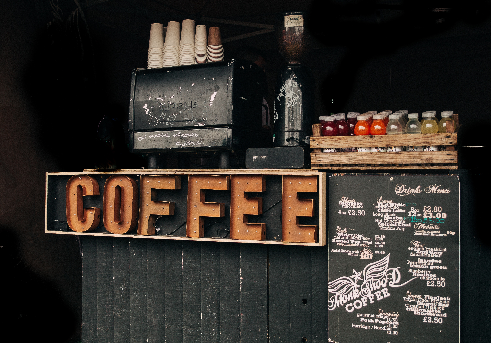
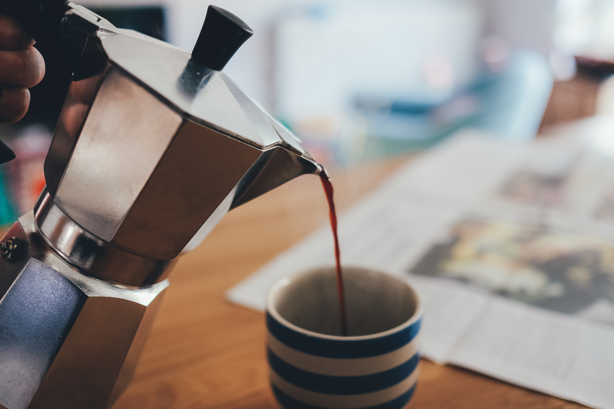
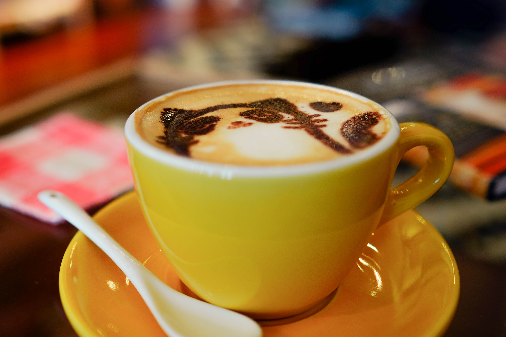

"Our shop caters to the night owls among us,
who deserve better than a day-long drip from the truck stop, scalding slop at the drive-thru,
or that watery black ink you find at your 24-hour chain." So says owner Edna Gray
"We serve those who seek the creative atmosphere available when others are sleeping -
who aren't interested in the bar scene. Writers, artists, students, programmers, and those who keep the daytime running
need a place to relax with a spot of tea, or kick their creative juices into high gear.
So, bring your laptop, notebook, or sketchpad and count on finding that perfect and fresh cup
every time at any hour of the night!"
Drinks & Eats Menu



ESPRESSO
250
400
CAPPUCCINO
300
450
LATTE
300
450
MOCHA organic chocolate
300
450
COCOA free-range chocolate
300
450
TEA green or black
200
250
BAKERY
275
425
BISCUIT
250
3
available iced
no charge
organic soy milk
50
almond milk
50
extra shot
add 175
This month's house blend comes from La Cooperativa de Granja Orgánico in Peru.
Organic Skim Milk locally sourced by Sweet Grass Dairy in Fredericktown, Ohio.
About Our Owner...
Edna Gray
"Some people said I was too OLD to start my own shop. I told them to mind their OWN business!"
So says Edna Gray, who started the cafe last year at age 87.
"A few years back, my book group went on a trip to Costa Rica. We visited a coffee plantation there,
and watched these ancient old men carry 100lb sacks of coffee on their backs, up and down the mountain.
I thought if they could keep moving, so could I! Besides, I've got my grandson for the heavy lifting.
We import fair trade coffee from some of the smaller worker-owned plantations in places like Guatemala and
this month's special tea comes from a women's cooperative in Sri Lanka."
Edna runs the shop with the help of her granddaughter, an accomplished barista.
"Chloe goes with me to meet the farmers and small scale producers. Every bean comes with a story.
We just got back from a trip to Ecuador. The men and women at El Cooperativo have been working the land for generations,
but only recently managed to buy it to work for themselves.